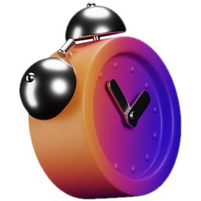

SGK Teşvik
Teşvikleri dakikalar içinde eksiksiz ve hatasız hesaplar; yürürlükteki tüm teşvik kodlarını çalışan bazında kontrol eder ve teşvik raporlarını hazırlar.
Daha fazlaSegika SGK Teşvik ve Otomasyon Yazılımı; teşviklerinizi eksiksiz hesaplar, sağlık raporlarını otomatik onaylar, KBS (kimlik) ve İŞKUR bildirimlerini otomatik hazırlayıp yürütür.
Teşvik hesaplamadan sağlık raporu onayına, KBS (kimlik) ve İŞKUR bildiriminden SGK raporlarına kadar rutin işler sistemde otomatik yürür.
Teşvikleri dakikalar içinde eksiksiz ve hatasız hesaplar; yürürlükteki tüm teşvik kodlarını çalışan bazında kontrol eder ve teşvik raporlarını hazırlar.
Daha fazlaSağlık raporları SGK'ya düştüğünde kontrol edilir ve belirlediğiniz kurallara göre, SMS onayı beklenmeden otomatik onaylanır.
Daha fazlaİşe giren ve çıkan personel, bölgeye göre Emniyet veya Jandarma'ya otomatik bildirilir.
Daha fazlaİşgücü çizelgesi SGK verinizden otomatik hazırlanır; onayınızla İŞKUR'a gönderilir.
Daha fazlaTahakkuk raporu, hizmet listesi, işyeri borç sorgulama ve giriş-çıkış listesi tek panelde; Excel ve PDF çıktı.
Daha fazlaÇalışma şeklinize uyan yöntemi seçin; sonuç birkaç dakikada ekranınızda.
Dosya yüklemeden; önceki aylar ve bu ayın giriş-çıkışlarıyla hesaplanır.
Aylık prim hizmet belgesini MuhSGK'ya göndermeden yükleyin; cari ay eksiksiz hesaplanır.
Belge MuhSGK'ya yüklenir, sistem SGK'ya bağlanıp hesaplar; ayrı lokasyonlardaki ekipler için ideal.
Luca, Zirve, Orca, Mikro, Logo, ETA, SAP veya Canias'tan veri; entegrasyon bir kez kurulur.
Teşvikten iş kazasına, İŞKUR'dan MYK belgesine kadar her yükümlülük tek panelde takipte.

Sağlık raporları SMS onayı beklemeden otomatik onaylanır; mahsuplaşma onayı ve raporu aynı panelde.
İşgücü çizelgesi SGK verinizden otomatik hazırlanır; onayınızla İŞKUR'a gönderilir.

SGK verisiyle personel hareketleri izlenir; işyerinin bölgesine göre Emniyet veya Jandarma'ya otomatik bildirilir.

İş kazaları otomatik takip edilir; 3 iş günü içindeki bildirim yükümlülüğünü kaçırmazsınız.

Mesleki yeterlilik belge sorgulama ve işyeri analizi tek panelde.
Yürürlükteki tüm teşvik kodları çalışan bazında, dakikalar içinde ve hatasız hesaplanır.

Tahakkuk, hizmet listesi, borç sorgulama ve giriş-çıkış listesi tek panelde; Excel ve PDF çıktı.
Sorunuzu uzmanımıza WhatsApp'tan yazın; sınırsız sistem desteğiyle yanıt alın.
Mali müşavirlik ofislerinden çok şubeli üreticilere, her ölçekte somut kazanç.
Türkiye'nin en büyük SGK işlem hacmi her ay Segika üzerinden yürüyor: 20.000+ firma, 1,7 Mn+ çalışan, 61 Bin+ sicil.
6111, 3294 ve 2828 sayılı kanunlardan doğan teşviklerin aylık toplamı; çalışan bazında, dakikalar içinde ve hatasız.
Dört hesaplama yönteminden çalışma şeklinize uyanı seçin; sonuç birkaç dakikada ekranınızda.
Her ay 20 binden fazla firma SGK işlemlerini Segika üzerinden yürütüyor.
Her ay 1,7 milyondan fazla çalışanın SGK verisi sistemde işleniyor.
Her ay 61 binden fazla işyeri sicili tek panelden izleniyor.
Raporlar SMS onayı beklenmeden, belirlediğiniz kurallara göre saniyeler içinde onaylanıyor.
16 binden fazla sicilde vizite onayı sistem tarafından yürütülüyor.
İşe giren ve çıkan personel, bölgesine göre Emniyet veya Jandarma'ya otomatik bildiriliyor.
Yetkilendirmeyi tamamlayın; 5 binden fazla sicilde bildirimleri sistem yönetiyor.
Yeni bir kayıt bulunduğunda yetkili kişilere anında e-posta gidiyor; 3 iş günlük bildirim süresi kaçmıyor.
21 binden fazla işyeri sicili SGK sisteminde periyodik olarak taranıyor.
Luca, Zirve, Orca, Mikro, Logo, ETA, SAP ve Canias ile entegrasyonu bir kez kurmanız yeterli; diğer yazılımlar Web API ile bağlanır.
Entegrasyonları inceleyinÜcretsiz hesabınızı açın; teşvik hesaplamayı, sağlık raporu onayını, KBS ve İŞKUR bildirimlerini tek panelden yönetin.
 Web API
Web API